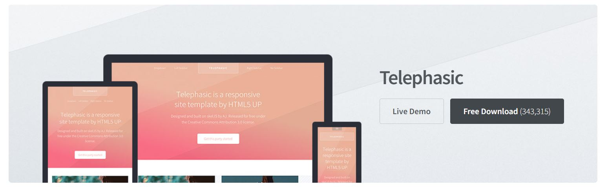

Verkefni 1:
Vefsíðugerð og útgáfustýring.
Verkefnislýsing
Búðu til vefsíðu sem hýsir þitt vinnuframlag (portfolio).
Veldu og/eða smíðaðu html sniðmát fyrir vefsíðuna þína, skipulegðu hana með upplýsingum um þig og þína ferilskrá.
1. Skrásettu ítarlega hvernig þú framkvæmdir fyrsta verkefnið í máli og myndum þar sem eftirtaldið kemur fram:
Hvaðan þú sóttir sniðmátið og/eða innblástur, útskýrðu ákvarðanatöku.
Hverjar eru hönnunarforsendur í upphafi, t.d. hvernig hægt er að finna undirsíður, litaval eða annað sem hugsað var út í.
Hvernig var staðið að myndvinnslu fyrir síðu, t.d. hvernig myndir og skjáskot voru smækkaðar og unnar fyrir verkefnið.
Notaðir þú önnur forrit eða fannstu aðrar upplýsingar til að vinna verkefnið? Segðu frá.
2. Segðu frá hvað þú vilt fá út úr áfanganum og veltu fyrir þér hvað þú myndir vilja gera sem lokaverkefni.
3. Útskýrðu hvernig þú hlóðst upp síðunni á Github, hvort þú notaðir git bash eða aðra aðferð. Segðu frá þeim áskorunum sem þurfti að takast á við og hvernig var leyst úr þeim.
Settu hlekk inná github repositoryið inná vefsíðuna sjálfa.
Leyfilegt er að gera vefsíðuna á Ensku eða Íslensku.
Verkefnið
Gerð vefsíðunnar
Fyrsta skrefið í verkefninu var að horfa á myndbönd kennarans og að skoða vefsíður frá fyrri nemendum til að fá grófa hugmynd fyrir því hvernig þessi vefsíða ætti að vera. Eftir að ég var kominn með hugmynd um hvað ég vildi gera ákvað ég að skoða mismunandi snið fyrir vefsíður á HTML5UP þar sem ég hafði aldrei gert vefsíðu áður né forritað í HTML. Sniðin á HTML5UP gefa manni góðan grunn til að vinna með, sem einfaldar vefsíðugerðina töluvert.
Á HTML5UP má finna mörg mismunandi snið fyrir vefsíður, en mín helstu skilyrði fyrir vefsíðu voru:
1. Einföld
2. Stílhrein
3. Fagmannlegt yfirbragð.
Á endanum valdi ég Telephasic sniðið þar sem ég taldi það uppfylla mín skilyrði. Einnig var ég hrifinn af því að hafa svokallaðan "dropdown" valmöguleika en það gerði mér kleift að hafa öll verkefnin mín aðgengileg á sama stað en þó öll aðskilin til að koma í veg fyrir að hafa of mikið af upplýsingum á sama stað.

Nú þegar sniðið var komið náði ég í forritið Brackets til að breyta kóðanum, taka burt það sem ég vildi ekki og bæta við. Það góða við Brackets er að það býður upp á Live Preview, en þá get ég skoðað hvernig breytingar á kóðanum hafa áhrif á vefsíðuna.
Núna byrjaði ég að fikta og lærði fljótt á hvernig þetta virkaði. Það helsta sem ég þurfti að passa upp á var að ef ég tók eitthvað út úr kóðanum að allt syntax-ið í HTML væri ennþá rétt. Því er mikilvægt að skoða vel hvort allar skipanir sé rétt opnaðar og lokaðar, en ef eitthvað var ekki rétt voru stafirnir rauðir í Brackets. 
Að breyta síðunni gekk nokkuð vel fyrir sig og var ekki of flókið. Með því að skoða reglulega live preview var alltaf hægt að fara aftur í kóðann og taka einhverjar breytingar til baka. Ég notaði ChatGPT og w3schools til að aðstoða með HTML forritunina. Að setja myndir inn reyndist stundum maus og á einum stað þurfti ég t.d. að resize-a mynd svo hún myndi passa rétt inn í hólf sem var í sniðinu. Til að gera það notaði ég Paint og Resize takkann þar. Ég skoðaði upprunalegu stærð myndarinnar sem var til staðar og breytti myndinni minni í sömu stærð. Gæðin vissulega minnkuðu aðeins, en myndin passaði þó öll inn í rammann.  Einnig þurfti ég að bæta m.a. við skipunum í main.css skjalið, sem fylgdi sniðinu, til að fá myndirnar eins og ég vildi hafa þær. Það fékkst með því að segja ChatGPT hvað ég vildi og svo fékk ég kóðabút til að bæta við.
Einnig þurfti ég að bæta m.a. við skipunum í main.css skjalið, sem fylgdi sniðinu, til að fá myndirnar eins og ég vildi hafa þær. Það fékkst með því að segja ChatGPT hvað ég vildi og svo fékk ég kóðabút til að bæta við.

Vinstri myndin sýnir það sem ég fékk frá ChatGPT en á hægri myndinni er ég búinn að setja það neðst í main.css skjalið.
Þannig gekk vefsíðu ferlið nokkuð þægilega fyrir sig. Flest öll vesen sem ég lenti í voru leyst með ChatGPT og að skoða reglulega í live preview. Þannig gat ég prófað mig áfram í nokkrar klukkustundir þangað til ég fékk síðu sem ég varð ánægður með.
Hér fyrir ofan má sjá dæmi um hvernig sniðið lítur út og myndin fyrir neðan sýnir brot úr kóðanum.
Myndin hér að ofan sýnir hvaða breytingar ég setti í kóðann og myndin fyrir neðan sýnir hvernig breytingarnar komu út á vefsíðunni.
Ég gerði vefsíðuna meira og minna svona, breyta í kóða og sjá hvernig kom út. Þess vegna var mikilvægt að nota Brackets til þess að hafa þessi live preview, annars hefði þetta verið talsvert meira maus.